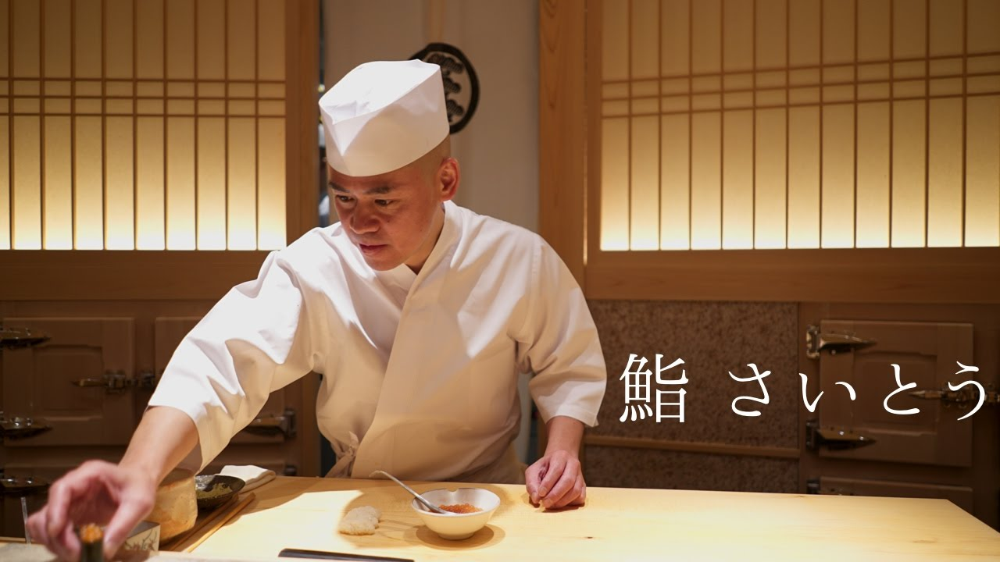

日本文学部


-

- 
和食 음식의 대표 격인 '스시'는 역시 본고장에서 맛봐야겠죠! 스시 전문점은 도쿄에만 해도 여러 군데 있지만 '스시 아사노야'는 우리가 보통 생각하는 스시의 형태인 '니기리즈시'를 중심으로 본격적인 에도마에스시를 맛볼 수 있는 가게입니다. 토요스 시장에서 직송된 신선한 생선을 사용하여 소재 본연의 맛을 최대한 이끌어낸 스시는 어느 것 하나 빠지지 않고 일품입니다. 특히, 계절에 맞춰 가장 맛있는 것만을 엄선해 들여오는 '참치 추토로(뱃살)'는 지방질이 적당하게 껴 있어 식감이 매우 좋습니다. 다양한 종류가 준비되어 있는 사케(일본술) 중에서 마음에 드는 것을 골라 곁들여 보시는 것도 추천합니다.
영업시간: [평일･토]런치 11:30-15:00(L.O.14:30) / 디너 17:00-23:00(L.O.22:30)
휴점일: 일요일
평균가격: 【공식 만찬】 6,000 엔 / 【점심】 1,250 엔
A wonderful serenity has taken possession of my entire soul, like these sweet mornings of spring which I enjoy with my whole heart. I am alone, and feel the charm of existence in this spot, which was created for the bliss
추우면 추울수록 즐거워지는 여행지, 바로 온천이다. 따뜻한 노천온천에 몸을 푹 담그고 바라보는 비경은 그야말로 환상적이다. 온천 여행하면 가장 먼저 떠오르는 여행지인 일본에는 100개가 넘는 온천 여행지가 있는데, 이 중 어디로 떠나야할 지 고민되기 마련이다. 익스피디아가 일본의 온천 여행지 중 딱 8곳만 엄선하여 소개한다.
and feel the charm of existence in this spot, which was created for the bliss
온천(일본어로 ‘온센’)은 천연 미네랄이 풍부하여, 목욕을 즐기며 휴식을 취하고 기력을 회복하기에 제격이다. 일본의 온천 문화는 실로 특색 있고 다채롭다. 온천수에 달걀을 담가 천천히 익혀서 먹는 ‘온센 타마고’도 별미.